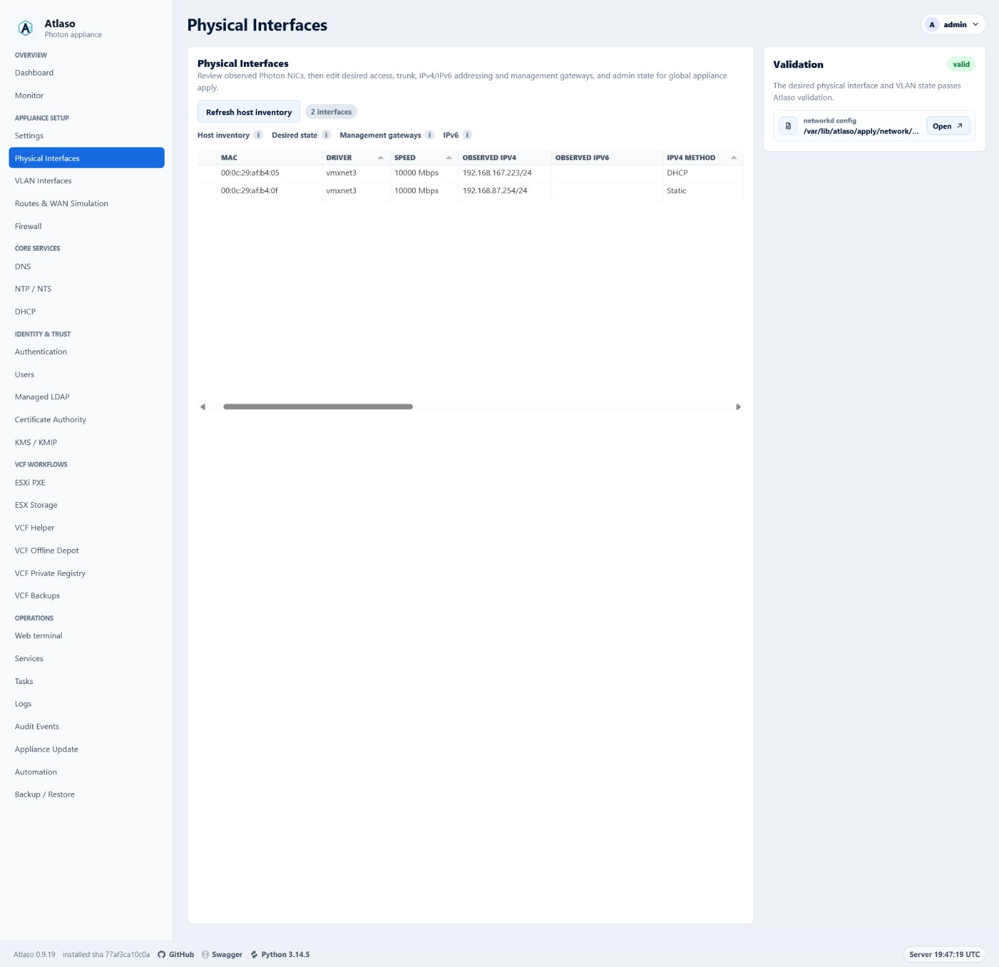
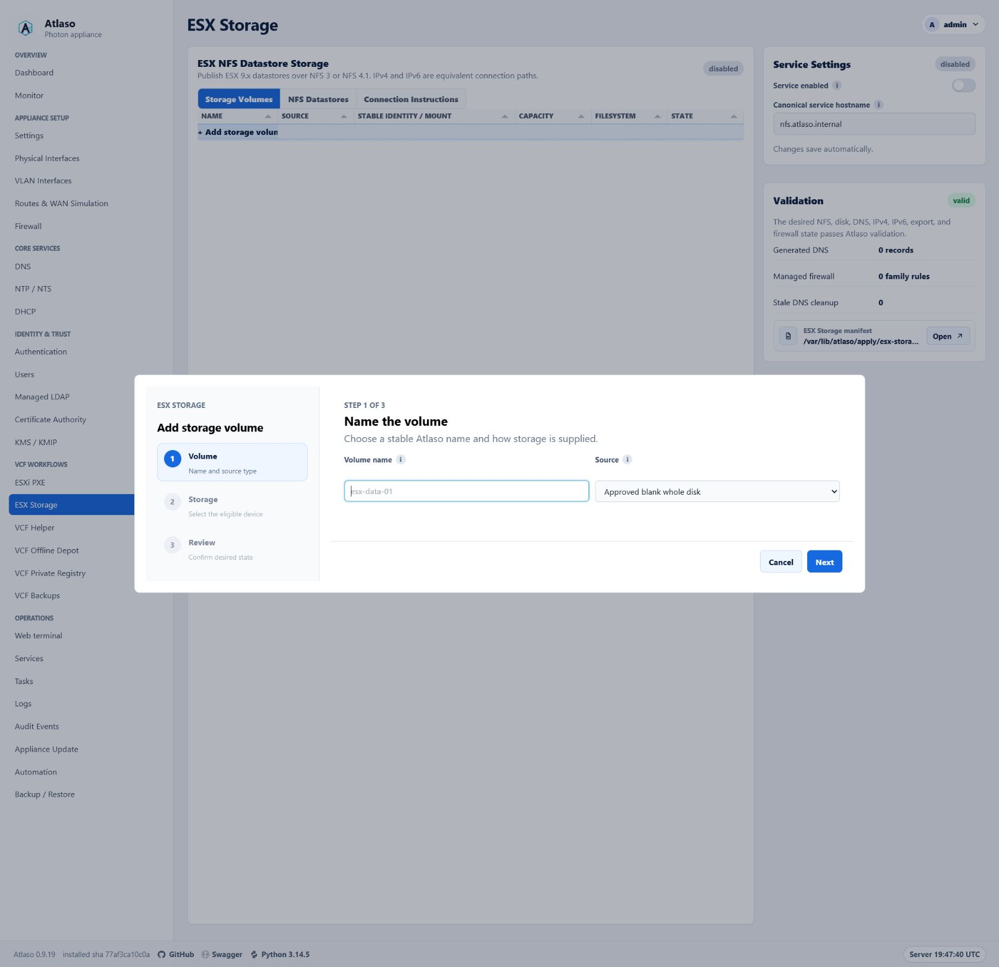

Atlaso UI Design Guide¶
This guide is the mandatory interaction and presentation contract for the Atlaso appliance. It applies to every change that affects templates, authored CSS, browser JavaScript, controls, layouts, data grids, dialogs, wizards, or visible copy.
The goal is consistency, not a collection of page-specific widgets. Reuse the established Atlaso patterns below before proposing a new one. The compliance program for existing surfaces is tracked in GitHub issue #115.
Mandatory contributor gate¶
Before planning a UI change:
- Read this guide after completing the repository policy gate in AGENTS.md.
- Classify the work as one of the established patterns: direct-edit Tabulator, wizard-backed Tabulator, read-only Tabulator, or non-grid settings. If none is truthful, classify it as approval-only custom/other.
- Name the existing Atlaso reference that will be reused in the first progress update and in the pull request. For custom/other, cite the explicit maintainer approval and name the closest related Atlaso reference.
- Obtain explicit maintainer approval before introducing a custom data grid or an interaction pattern that is not defined here.
Delegated agents must complete the same gate. A delegating agent must include the guide in the delegated prompt and verify compliance before using the work.
Choose the interaction pattern¶
| Pattern | Use it when | Atlaso reference |
|---|---|---|
| Direct-edit Tabulator | A collection has independent, compact fields that can be validated and saved one row at a time. | Physical Interfaces |
| Wizard-backed Tabulator | A collection remains useful to browse in a grid, but add or edit requires dependent choices, discovery, credentials, safety decisions, or a review step. | ESX Storage; Automation Schedules |
| Read-only Tabulator | A primary resource or operational collection is inspected, filtered, sorted, paginated, or opened for detail without inline mutation. | Tasks; Audit Events; Network Boot Discovered Hosts |
| Non-grid settings | A small set of singleton service or appliance settings is edited as desired state rather than as a resource collection. | DNS service settings and validation rail |
| Custom/other (approval required) | The work is not truthfully a collection or settings pattern, such as a dashboard, chart, public portal, or standalone dialog, and no established Atlaso interaction applies. | Cite explicit maintainer approval and name the closest related Atlaso surface. |
Tabulator is the only data-grid implementation. This restriction does not prevent CSS Grid from being used for page layout; it prevents new bespoke HTML, CSS, or JavaScript resource grids.
Custom/other is an approval escape hatch, not a default category. First reuse any applicable page shell, control, dialog, status, accessibility, and responsive behavior defined by this guide. The approval must record why the four established patterns are not truthful and what new interaction contract future work should follow.
Use a semantic HTML table only for a small, non-interactive summary or review preview that is not a browsable or editable resource collection. A collection does not become exempt merely because it currently has few rows.
Shared browser foundation¶
The classic browser asset static/ui-patterns.js exposes window.AtlasoUiPatterns in both the management and public
shells. It loads after the vendored Tabulator asset and before page code. The service worker precaches the same
versioned asset.
AtlasoUiPatterns.createGrid(...)is the only approved constructor entry point for every direct-edit, wizard-backed, or read-only Tabulator. It owns shared loading, ready, empty, error, permission, status, keyboard, context-menu, and server-rendered fallback behavior. The fallback remains visible until Tabulator emitstableBuilt, and it is retained or restored when initialization fails.AtlasoUiPatterns.createWizard(...)is the only approved step-controller entry point. It owns step locking, synchronous and asynchronous validation, review entry, navigation, discard confirmation through the shared confirmation modal, recoverable errors, focus containment, first-control focus, and launcher-focus restoration.- Wizard templates use
data-atlaso-wizardon the form and the genericdata-atlaso-wizard-*attributes for steps, navigation, status, and actions. Page adapters keep only business-specific discovery, validation, conditional-field, review-population, and submission callbacks.
All existing Tabulator initializers use createGrid, and primary resource collections use the shared grid rather than
custom interactive native tables. Raw constructors outside the shared foundation are forbidden. The repository policy
check rejects raw constructors, wizard markup without the generic contract, and page-specific generic step-controller
logic.
Tabulator collection contract¶
All primary resource collections use the repository's vendored Tabulator assets and shared Atlaso grid styles. Do not recreate sorting, selection, editing, keyboard behavior, responsive columns, pagination, empty states, or context menus from scratch.
Every Tabulator collection must:
- retain an accessible server-rendered fallback with truthful headers and values;
- have a stable row identity and an explicit loading, empty, error, and permission-denied state;
- preserve the current tab, selection, filters, and scroll context when an autosave or refresh can do so safely;
- use compact Atlaso control sizing, typography, status badges, and validation language;
- expose destructive and secondary row actions through the standard row context menu instead of permanent inline action clutter;
- keep read-only, generated, unavailable, and permission-restricted cells visibly distinct from editable cells;
- allow horizontal scrolling when the information cannot remain legible at the available width rather than compressing values beyond recognition; and
- preserve backend contracts, authorization checks, CSRF/session protections, and desired-state boundaries.
Direct editing¶
Use direct editing only when each field can be understood and validated without a sequence of dependent choices. Physical Interfaces is the reference.
- Autosave an edited row through the existing desired-state endpoint.
- Show a compact saving, saved, or failed status without shifting the page.
- On failure, retain the attempted value and a useful error, or roll back to the last confirmed value when the current contract requires rollback.
- Refresh affected validation and preview content in place.
- Put the new-record row at the bottom, keep it pinned there under every sort direction, and label it
+ Add record here. - In a new-record placeholder, enable only the required identity field first. Keep generated or defaulted cells blank and locked until identity is valid.
- Use the established editors for switches, enumerations, exact values, tags, and multiline content. Do not embed a form layout inside a row.
- When an Enabled column represents ordinary desired-state availability, make it directly editable. Saving a changed value must change whether that resource is available in rendered desired state while preserving the global appliance-apply boundary.
If a record cannot satisfy these constraints, keep its collection in Tabulator and move add/edit into a wizard.
Read-only collections¶
Tasks and Audit Events are the references for operational collections. Network Boot Discovered Hosts reuses that read-only grid contract while placing permission-gated secondary actions in the row context menu and opening an escaped semantic report with a compact history selector.
- Keep sorting, filtering, pagination, status, and detail navigation consistent with the established operational grids.
- Do not imply editability through editable-cell styling, input-shaped content, or hover behavior.
- Provide explicit detail actions or row navigation with keyboard equivalents.
- Keep sensitive output, secrets, and raw error payloads out of collection cells unless an existing permission-checked detail flow intentionally exposes them.
- Mask password values by default. A permission-checked reveal uses the small borderless eye control: show the plain eye while masked, draw a slash through it while the value is visible, and change its accessible label and title between Reveal password and Hide password. Automatically return to the masked state after 15 seconds. Reveals must disable browser caching and produce an audit event without the value.
Grid-launched wizard contract¶
ESX Storage is the primary add/edit reference. Automation Schedules is the reference for a longer, type-dependent workflow.
The Tabulator collection remains visible when the wizard is closed. Launch add from the bottom add row. Launch edit from row double-click or the row context menu when both are appropriate and discoverable.
Keep an ordinary desired-state Enabled boolean directly editable in its collection even when the rest of the record
uses a wizard. Use the standard tick/cross formatter and tickCross editor, save the complete validated record through
its existing edit route, restore the previous value on failure, and never invoke appliance enforcement. A security or
lifecycle boundary that requires credentials, confirmation, or an irreversible action is not an ordinary Enabled
boolean and keeps its established guarded workflow.
Every wizard must:
- use the shared Atlaso wizard panel, step rail, controls, spacing, and status presentation;
- use the shared two-column
.form-gridfor peer fields and.form-stackfor consistently spaced full-width rows; - keep an operator Description in the first step on its own full-width multiline row when the resource supports one;
- place the resource description in step 1 with its identity fields whenever the resource has a description;
- place an ordinary desired-state Enabled control in its own final step immediately before Review whenever the resource has an enabled state;
- give the dialog an accessible name and description, move focus to the first actionable control, trap focus while open, and return focus to the launcher when closed;
- show the current step, total step count, step name, and concise purpose;
- keep future steps unavailable until prerequisites pass;
- validate the current step before advancing and place validation feedback next to the affected control plus in an announced summary when needed;
- use Back, Next, and Cancel consistently, with an explicit final action on the review step;
- include a final review that names the object, desired-state changes, safety boundaries, and whether appliance enforcement requires global apply;
- retain entered values and validation errors when moving backward or after a recoverable submission failure;
- require confirmation before discarding meaningful unsaved wizard input; and
- close only after a successful save, then restore collection context and show the resulting row or status.
When peer resources are presented as tabs, keep a + Add <resource> launcher as the final tab after every existing
resource. The add launcher opens the shared wizard and must not displace, sort ahead of, or appear outside the tablist.
Do not perform host mutation as a side effect of moving between steps. Wizard submission saves desired state unless the
established workflow is an explicit task action. Appliance configuration enforcement remains owned by the global
/appliance-apply workflow.
VCF Helper remote-credential wizard contract¶
Every VCF Helper wizard that connects to a remote VCF component uses the same first four steps:
- Credential — choose a saved vault and key, or continue with manual credentials.
- Server — show the remote server address. A saved vault key fills this value from the HTTP or HTTPS URI selected
in the credential picker and makes the control read-only; manual mode keeps it editable. Server-address controls
show only
host, IP, orhost:port, never the URI scheme. A control explicitly labeled as a URL retains the full HTTP or HTTPS URL. - TLS fingerprint — probe without resolving or sending credentials, display the observed SHA-256 fingerprint, and require explicit out-of-band confirmation before authentication.
- Login — collect request-local username and password only in manual mode. Disable the controls and skip this step when a saved vault credential is selected.
Place workflow-specific steps, such as inventory selection, password selection, review, or task queueing, after this shared sequence. Never load a vault password into page state or a password input. If the server or fingerprint changes, clear the confirmation and repeat the TLS step before any credential is resolved or sent.
The credential picker lists only keys with HTTP or HTTPS URIs. Render one option per valid URI so an operator can choose the exact endpoint when a key has several. Do not render unusable SSH-only or URI-less keys as disabled options. If the selected vault has no valid remote API credentials, show No HTTP/HTTPS credentials available and keep manual mode active.
Page layout and settings¶
Use the existing application shell. Configurable service pages use the DNS page as the default layout reference:
- keep the primary resource collection or workflow in one framed
.panel.wide-panelin the main column; - keep service settings in the right-side rail;
- use the compact Pending Appliance Changes card for the current apply unit and the shared appliance-review modal;
- keep service-specific validation, warnings, and compact preview actions in the Validation card;
- keep full rendered configuration out of the rail and open it in the shared preview modal; and
- collapse the rail below the main content at narrow widths without changing reading or keyboard order.
ESXi PXE is the reference when one primary service frame has several views. Put the resource heading, concise purpose,
summary status, .tool-tabs tablist, and associated tab panels inside the same outer frame. Do not place the tablist in
a detached panel or wrap every tab panel in a competing outer card. Use .zone-tabs for switching between peer
workspaces, organizations, domains, or repositories; use .tool-tabs for related views of the resource named by the
containing frame.
The right rail keeps settings and validation separate. The settings card owns desired-state controls. The
Validation card truthfully summarizes current readiness, lists actionable errors or warnings, and contains only
compact preview actions. Do not duplicate validation state in a separate main-column frame or omit the Validation card
when a configurable service has readiness requirements. OpenID Connect follows this composition: OIDC administration
and its tool tabs occupy the main frame, while Provider Settings and Validation remain persistent in the right rail.
When the service renders an appliance configuration, the Validation card must include the shared
partials/config_preview_action.html row with the truthful staged path and a redacted preview; a valid status alone is
not a substitute for making the reviewed configuration available.
Treat routine forms as desired-state editors. Autosave safe changes with data-autosave-form and a nearby
.autosave-status; do not add a visible Save button when the established endpoint safely supports autosave. Editing and
enforcement are separate. Never add a service-specific apply card, route, or job in place of global appliance apply.
Use the established control for the value:
- switch for a binary setting;
- select or list editor for a short enumeration;
- input for an exact free-form value;
- textarea for multiline configuration;
- tabs for mutually exclusive modes that solve the same job; and
- tag editor for one-or-more interfaces, addresses, networks, domains, or labels.
Multiple checkbox choices¶
Use checkbox choice tiles when an operator may select several independent options and each option benefits from a short description. The Allowed scopes control in the OpenID Connect confidential-client wizard is the reference. Keep a plain checkbox list for compact, self-explanatory options, and use a select, radio group, or tabs when the choices are mutually exclusive.
The tile treatment must:
- use a semantic
fieldsetandlegend, with one native checkbox wrapped by each full-widthlabel; - place a concise option name and supporting description beside the checkbox;
- use the selected border and background, the native checked state, and a visible
:focus-withintreatment so color is never the only indication; - reserve a compact trailing badge for durable constraints such as required, not transient validation messages;
- preserve server-side validation because a badge or default checked state does not enforce a requirement;
- arrange a short set in a balanced grid and collapse to one column at narrow widths; and
- keep the native checkbox visible and the complete tile clickable. Do not replace it with a scripted div or use the visual card as a mutually exclusive radio control.
Use the OIDC scope-choice structure for this pattern:
<fieldset class="scope-choice-fieldset">
<legend>Allowed scopes</legend>
<div class="scope-choice-grid">
<label class="scope-choice">
<input type="checkbox" name="allowed_scopes" value="openid" checked>
<span class="scope-choice-copy">
<strong>OpenID</strong>
<small>Required identity subject and ID token</small>
</span>
<span class="scope-choice-badge">required</span>
</label>
</div>
</fieldset>
Every configurable setting has an adjacent i help control using .field-label and .help-icon. The tooltip explains
what changes, where it applies, and any safety boundary. Use explicit action labels such as Review appliance changes
or Submit appliance changes instead of generic Save or Apply.
Destructive actions use the shared data-confirm-modal pattern. The confirmation names the object, explains what is
removed, and states whether the appliance changes immediately or only after global appliance apply. Do not use browser
confirmation dialogs or immediate destructive submits.
Validation, status, and permissions¶
- Validation states use explicit valid, needs attention, disabled, or other truthful language already established by the appliance.
- Errors explain what failed and how the operator can recover. Do not replace actionable errors with a generic failure toast.
- Loading and saving indicators must not cause large layout shifts.
- Disabled controls must have a visible reason when the operator could reasonably expect the action to be available.
- The UI may hide actions the current role cannot perform, but the server must continue to enforce authorization.
- No-JavaScript fallbacks must remain truthful and usable for reading. Mutating fallback forms retain CSRF, permission, validation, and confirmation boundaries.
Accessibility and responsive behavior¶
All established patterns must work with keyboard-only operation and at desktop and narrow viewports.
- Use native controls and semantic landmarks before adding ARIA.
- Give server-rendered tabs literal initial
aria-selectedvalues and let the shared tab script update them after restoring state. - Associate labels, help, validation, and descriptions with their controls.
- Keep a visible focus indicator and a logical focus order.
- Never make hover the only way to discover help or an action.
- Provide keyboard equivalents for row double-click and context-menu actions.
- Announce autosave, validation, and asynchronous completion without repeatedly interrupting the operator.
- Keep dialogs usable at browser zoom and on short or narrow viewports; dialog content scrolls while its title and primary navigation remain understandable.
- Preserve meaningful document order when a split workspace collapses.
- Do not use color as the only indicator of state, editability, or error.
Reviewed semantic-table exemptions¶
The following may remain semantic tables while they stay compact, non-interactive summaries rather than browsable or editable resource collections:
- backup archive-scope summaries;
- generated DHCP PXE option previews;
- generated DNS reverse-zone previews;
- VCF Helper FQDN review inside its modal;
- tooltip and membership summaries; and
- compact key/value, manifest, configuration, and result previews.
If an exempt summary gains collection behavior such as sorting, filtering, pagination, selection, row navigation, inline editing, or resource actions, it must move to Tabulator or receive explicit maintainer approval for a new exception.
Reference screenshots¶
Physical Interfaces: direct-edit Tabulator¶
The collection is the page's primary workspace. Compact grid editing handles independent interface fields while validation stays in the right-side rail.

ESX Storage: grid-launched wizard¶
The storage collection remains the browse surface. Add/edit opens a structured wizard with step navigation, validation, and a final review.

Pull-request checklist¶
For every UI change:
- The interaction is classified as direct-edit Tabulator, wizard-backed Tabulator, read-only Tabulator, non-grid settings, or approval-only custom/other.
- The pull request names the existing Atlaso reference being reused, or for custom/other cites maintainer approval and the closest related reference.
- No custom grid or new interaction pattern was added without explicit maintainer approval.
- Desired-state, autosave, permission, confirmation, validation, and global appliance-apply boundaries are preserved.
- The server-rendered fallback remains truthful and accessible.
- Focused tests and the full required repository checks pass.
- The affected flow was verified at desktop and narrow viewports, with keyboard navigation, zoom, focus, and validation recovery considered.
- Appliance-deployed behavior was smoke-tested in VMware Workstation when the affected flow depends on the deployed appliance.